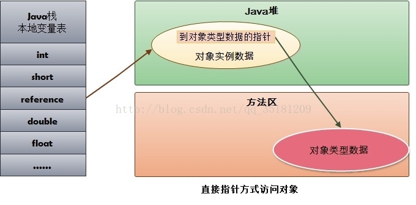

java 技术体系的自动内存管理的最根本的目标就是要自动化的解决两个问题：
- 自动给对象分配内存
- 自动回收分配给对象的内存
我们在进行java开发的过程中，我们根本不用去为每一个对象申请以及释放内存空间，这是是由于JVM帮我们完成了对象的内存管理，如果我们不了解JVM是怎么使用内存的，一旦发生内存泄漏或者溢出方面的问题，那只能火急火燎的找大牛过来帮忙处理了。
运行时数据区域
JVM在运行过程中，会把内存分为多个不同的数据区，他们各有各的用途，我们通过下图看下JVM是如何对内存结构进行划分的：

1、程序计数器
程序计数器是一块较小的内存空间，它可以看做是当前线程所执行字节码的行号指示器。
字节码解释器工作时就是通过改变这个计数器的值来选取下一条需要执行的字节码指令，它是程序控制流的指示器(分支、循环、跳转、异常处理、线程回复等基础功能都需要程序计数器)。
由于 jvm 虚拟机的多线程是通过线程轮流切、分配处理器执行时间(cpu时间片轮转机制)来实现，因此为了线程在切换后能恢复到正确的执行位置，每条线程需要一个独立的程序计数器，各条线程的程序计数器互不影响，独立存储，因此程序计数器是线程私有的。此块区域也是唯一一个没有OOM的内存区。
2、java虚拟机栈
java虚拟机栈也是线程私有的，它的生命周期与线程相同，虚拟机栈描述的是java方法执行的线程内存模型：每个方法被执行的时候，JVM都会同步创建一个栈帧（Stack Frame）用于存储 局部变量表、操作数栈、动态连接、方法返回地址和一些额外的附加信息。
Java虚拟机以方法作为最基本的执行单元，“栈帧”（Stack Frame）则是用于支持虚拟机进行方法调用和方法执行背后的数据结构，它也是虚拟机运行时数据区中的虚拟机栈（Virtual Machine Stack）的栈元素。
虚拟机栈的大小缺省为 1M，可用参数 –Xss 调整大小，例如-Xss256k。
2.1、栈帧
每一个方法从调用开始至执行结束的过程，都对应着一个栈帧在虚拟机栈里面从入栈到出栈的过程。
一个栈帧需要分配多少内存，并不会受到程序运行期变量数据的影响，而仅仅取决于程序源码和具体的虚拟机实现的栈内存布局形式。
我们看下栈帧的结构，如下图所示：
2.1.1、局部变量表
局部变量表是一组变量值的存储空间，用于存放方法参数和方法内部定义的局部变量。存放如下数据：
- 编译期可知的各种 java 虚拟机基本数据类型（boolean、byte、char、short、int、float、long、double）,其内存分配在栈上，变量出了作用域就会自动释放；
对象引用
reference类型:一是从根据引用直接或间接地查找到对象在Java堆中的数据存放的起始地址或索引，二是根据引用直接或间接地查找到对象所属数据类型在方法区中的存储的类型信息, 无论是成员变量，局部变量，还是类变量，它们指向的对象都存储在堆内存中；returnAddress类型(指向了一条字节码指令的地址)
目前已经很少见了，它是为字节码指令jsr、jsr_w和ret服务的，指向了一条字节码指令的地址，某些很古老的Java虚拟机曾经使用这几条指令来实现异常处理时的跳转，但现在也已经全部改为采用异常表来代替了。
这些数据类型在局部变量表中的存储空间以局部变量槽（Slot）来表示。
局部变量表的容量以变量槽（Variable Slot）为最小单位。其中64位的double和long类型的数据会占用2个局部变量空间(slot), 其他基本数据类型只占用1个。局部变量空间所需的内存空间在编译期间完成分配。
Java虚拟机通过索引定位的方式使用局部变量表，索引值的范围是从0开始至局部变量表最大的变量槽数量。如果访问的是32位数据类型的变量，索引N就代表了使用第N个变量槽，如果访问的是64位数据类型的变量，则会同时使用第N和N+1两个变量槽。对于两个相邻的共同存放一个64位数据的两个变量槽，虚拟机不允许采用任何方式单独访问其中的某一个。
当一个方法被调用时，Java虚拟机会使用局部变量表来完成参数值到参数变量列表的传递过程，即实参到形参的传递。如果执行的是实例方法（没有被static修饰的方法），那局部变量表中第0位索引的变量槽默认是用于传递方法所属对象实例的引用，在方法中可以通过关键字“this”来访问到这个隐含的参数。其余参数则按照参数表顺序排列，占用从1开始的局部变量槽，参数表分配完毕后，再根据方法体内部定义的变量顺序和作用域分配其余的变量槽。
为了尽可能节省栈帧耗用的内存空间，局部变量表中的变量槽是可以重用的，方法体中定义的变量，其作用域并不一定会覆盖整个方法体，如果当前字节码PC计数器的值已经超出了某个变量的作用域，那这个变量对应的变量槽就可以交给其他变量来重用。
不过，这样的设计除了节省栈帧空间以外，还会伴随有少量额外的副作用，例如在某些情况下变量槽的复用会直接影响到系统的垃圾收集行为,例如：
public static void main(String[] args) {
byte[] bytes = new byte[1024 * 1024 * 64];
System.gc();
}
[0.003s][warning][gc] -XX:+PrintGC is deprecated. Will use -Xlog:gc instead.
[0.015s][info ][gc] Using G1
[0.036s][info ][gc] Periodic GC disabled
[0.186s][info ][gc] GC(0) Pause Full (System.gc()) 68M->66M(234M) 3.159ms
上例中 bytes所使用内存并没有被垃圾回收期所回收，因为gc的时候 bytes数组 仍然处于作用域内。
代码调整如下:
public static void main(String[] args) {
{
byte[] bytes = new byte[1024 * 1024 * 64];
}
System.gc();
}
[0.003s][warning][gc] -XX:+PrintGC is deprecated. Will use -Xlog:gc instead.
[0.011s][info ][gc] Using G1
[0.031s][info ][gc] Periodic GC disabled
[0.168s][info ][gc] GC(0) Pause Full (System.gc()) 68M->66M(234M) 3.055ms
从gc日志看出，bytes数组依然没有被垃圾会后期所回收。
接着修改程序代码如下：
public static void main(String[] args) {
{
byte[] bytes = new byte[1024 * 1024 * 64];
}
int xx = 0;
System.gc();
}
[0.003s][warning][gc] -XX:+PrintGC is deprecated. Will use -Xlog:gc instead.
[0.013s][info ][gc] Using G1
[0.033s][info ][gc] Periodic GC disabled
[0.185s][info ][gc] GC(0) Pause Full (System.gc()) 68M->1M(17M) 5.387ms
此时我们看到bytes数组正常被垃圾回收器回收了，但是这是问什么呢？
产生这种问题的根本原因就是：局部变量表中的变量槽是否还存有关于 bytes 数组对象的引用，第一次修改后，gc虽然已经离开了bytes数组的作用域，但在此之后，在没有发生过任何对局部变量表的读写操作，bytes数组原本所占用的变量槽还没有被其它变量所复用，所以作为GC Roots 一部分的局部变量表仍然保持着对它的引用。
第二次修改后，加了int xx = 0, 由于局部变量表中变量槽是可以被复用的，之前存储变量 bytes 数组的槽现在改为了存储变量 xx，然后再进行GC是，bytes数组所占用的内存就可以正常被垃圾回收器回收了。
这种操作(或者手动将变量值设置为null，把变量对应的局部变量槽清空)可以作为一种在极特殊情形（对象占用内存大、此方法的栈帧长时间不能被回收、方法调用次数达不到即时编译器的编译条件）下的“奇技”来使用。
另外需要注意的是: 局部变量在声明之后必须进行赋值操作。
2.2、操作数栈
操作数栈是一个后进先出的栈，同局部变量表一样，操作数栈的最大深度也在编译的时候被写入到Code属性的max_stacks数据项之中。操作数栈的深度都不会超过在max_stacks数据项中设定的最大值。
当一个方法刚刚开始执行的时候，这个方法的操作数栈是空的，在方法的执行过程中，会有各种字节码指令往操作数栈中写入和提取内容，也就是出栈和入栈操作。
两个不同栈帧作为不同方法的虚拟机栈的元素，是完全相互独立的。但是在大多虚拟机的实现里都会进行一些优化处理，令两个栈帧出现一部分重叠。
2.3、动态连接
每个栈帧都包含一个指向运行时常量池中该栈帧所属方法的引用，持有这个引用是为了支持方法调用过程中的动态连接（Dynamic Linking）。
Class文件的常量池中存有大量的符号引用，字节码中的方法调用指令就以常量池里指向方法的符号引用作为参数。这些符号引用一部分会在类加载阶段或者第一次使用的时候就被转化为直接引用，这种转化被称为静态解析。
另外一部分将在每一次运行期间都转化为直接引用，这部分就称为动态连接。
2.4、方法返回地址
当一个方法开始执行后，只有两种方式退出这个方法。
第一种方式是执行引擎遇到任意一个方法返回的字节码指令，这时候可能会有返回值传递给上层的方法调用者（调用当前方法的方法称为调用者或者主调方法），方法是否有返回值以及返回值的类型将根据遇到何种方法返回指令来决定，这种退出方法的方式称为“正常调用完成”。
另外一种退出方式是在方法执行的过程中遇到了异常，并且这个异常没有在方法体内得到妥善处理。无论是Java虚拟机内部产生的异常，还是代码中使用athrow字节码指令产生的异常，只要在本方法的异常表中没有搜索到匹配的异常处理器，就会导致方法退出，这种退出方法的方式称为“异常调用完成”。
无论采用何种退出方式，在方法退出之后，都必须返回到最初方法被调用时的位置，程序才能继续执行，方法返回时可能需要在栈帧中保存一些信息，用来帮助恢复它的上层主调方法的执行状态。
方法退出的过程实际上等同于把当前栈帧出栈，因此退出时可能执行的操作有：恢复上层方法的局部变量表和操作数栈，把返回值（如果有的话）压入调用者栈帧的操作数栈中，调整PC计数器的值以指向方法调用指令后面的一条指令等。
3、本地方法栈
与java虚拟机栈的作用相似，不同的是此块区域是为本地方法(native)服务的。
4、java堆内存
对于Java应用程序来说，Java堆（Java Heap）是虚拟机所管理的内存中最大的一块。
Java堆是被所有线程共享的一块内存区域，在虚拟机启动时创建。此内存区域的唯一目的就是存放对象实例，Java 世界里“几乎”所有的对象实例都在这里分配内存。
但是随着即时编译技术的进步，尤其是逃逸分析技术的日渐强大，出现了栈上分配、标量替换优化手段，因此要说所有对象实例都分配在堆上就没那么严谨了。
逃逸分析的原理：分析对象动态作用域，当一个对象在方法中定义后，它可能被外部方法所引用。比如：调用参数传递到其他方法中，这种称之为方法逃逸。甚至还有可能被外部线程访问到，例如：赋值给其他线程中访问的变量，这个称之为线程逃逸。从不逃逸到方法逃逸到线程逃逸，称之为对象由低到高的不同逃逸程度。
/**
* -XX:-DoEscapeAnalysis 关闭逃逸分析，jvm默认是开启逃逸分析的。
*/
public class EscapeAnalysisMock {
public static void main(String[] args) throws Exception {
long start = System.currentTimeMillis();
for (int i = 0; i < 5000000; i++) {
allocate();
}
System.out.println(System.currentTimeMillis() - start + " ms");
Thread.sleep(600000);
}
static void allocate() {
MyObject myObject = new MyObject(2000, 2000.6);
}
static class MyObject {
int a;
double b;
public MyObject(int a, double b) {
this.a = a;
this.b = b;
}
}
}
-------------------------
开启时本地执行 4ms
关闭太一分析本执行 45ms
如果是逃逸分析出来的对象可以在栈上分配的话，那么该对象的生命周期就跟随线程了，就不需要垃圾回收，如果是频繁的调用此方法则可以得到很大的性能提高。采用了逃逸分析后，满足逃逸的对象在栈上分配。
在JVM启动的时候创建。Java堆空间只是在逻辑上是连续的，在物理上并不一定是连续的内存空间。堆所占内存的大小由-Xmx指令和-Xms指令来调节。
在《Java虚拟机规范》中对Java堆的描述是: 所有的对象实例以及数组都应当在堆上分配。
如果从分配内存的角度看，所有线程共享的Java堆中可以划分出多个线程私有的分配缓冲区（Thread Local Allocation Buffer，TLAB），以提升对象分配时的效率。不过无论从什么角度，无论如何划分，都不会改变Java堆中存储内容的共性，无论是哪个区域，存储的都只能是对象的实例，将Java 堆细分的目的只是为了更好地回收内存，或者更快地分配内存。
Java堆可以处于物理上不连续的内存空间中，但在逻辑上它应该被视为连续的，这点就像我们用磁盘空间去存储文件一样，并不要求每个文件都连续存放。但对于大对象（典型的如数组对象），多数虚拟机实现出于实现简单、存储高效的考虑，很可能会要求连续的内存空间。
Java堆既可以被实现成固定大小的，也可以是可扩展的，不过当前主流的Java虚拟机都是按照可扩展来实现的（通过参数 -Xmx 和 -Xms 设定）。如果在Java堆中没有内存完成实例分配，并且堆也无法再扩展时，Java虚拟机将会抛出OutOfMemoryError异常。
由上面分析可得出如下的java堆特征：
- 线程共享区域
- 用于存放对象实例和数组
- 堆是java虚拟机管理的内存中最大的一块。
- 垃圾收集器的管理的主要区域,为了现在垃圾收集收集器都是采用分代收集算法，所以把堆细分为多个子区域：
- 新生代
默认情况下，新生代中Eden空间与Survivor空间的比例是8:1,可以使用参数-XX:SurvivorRatio进行设置- 伊甸区(eden)
- from survivor
- to survivor
- 老年代 主要存放应用程序中生命周期长的内存对象
- 新生代
堆大小参数：-Xms：堆的最小值；-Xmx：堆的最大值；-Xmn：新生代的大小；-XX:NewSize；新生代最小值；-XX:MaxNewSize：新生代最大值；
5、方法区
方法区（Method Area）与Java堆一样，是所有线程共享的一块内存区域，用于存储被虚拟机加载的类型信息、常量、静态变量、即时编译器编译后的代码缓存等数据。
jdk7之前采用永久代来实现，占用jvm的堆内存不说，还可能会OOM: PermGen space,
jdk8之后移除永久代而采用了元数据区（本地内存）来实现方法区，理论上来说，只要物理条件允许，这个区域要多大有多大。
5.1、常量池
5.1.1、Class 常量池(静态常量池)
在 class 文件中除了有类的版本、字段、方法和接口等描述信息外，还有一项信息是常量池 (Constant Pool Table)，用于存放编译期间生成的各种字面量和符号引用
5.1.2、运行时常量池
运行时常量池（Runtime Constant Pool）是方法区的一部分，是每一个类或接口的常量池（Constant_Pool）的运行时表示形式，它包括了若干种不同的常量：从编译期可知的数值字面量到必须运行期解析后才能获得的方法或字段引用。
运行时常量池是在类加载完成之后，将 Class 常量池中的符号引用值转存到运行时常量池中，类在解析之后，将符号引用替换成直接引用。
运行时常量池相对于Class文件常量池的另外一个重要特征是具备动态性。java语言并不要求常量一定只在编译器产生。
例如 String类的intern()方法就是在JVM运行期间将新的常量放入到常量池中。
注意： jdk6之前字符串常量池是放在永久区中的，第一次创建字符串实例的时候讲字符串复制到常量池中，intern()返回常量池中的引用地址，而jdk6之后字符串常量池被移动到了java堆内存中,所以直接将字符串首次出现的引用地址记录到常量池就可以了，这是intern()方法返回的和堆中字符串实例是同一个引用地址。
既然运行时常量池是方法区的一部分，自然受到方法区内存的限制，当常量池无法再申请到内存时会抛出OutOfMemoryError异常。
5.1.3、字符串常量池
字符串常量池这个概念是最有争议的，翻阅了虚拟机规范等很多正式文档，发现没有这个概念的官方定义，所以与运行时常量池的关系不去抬杠，我们从它的作用和 JVM 设计它用于解决什么问题的点来分析它。
以 JDK1.8 为例，字符串常量池是存放在堆中，并且与 java.lang.String 类有很大关系。设计这块内存区域的原因在于：String 对象作为 Java 语言中重要的数据类型，是内存中占据空间最大的一个对象。高效地使用字符串，可以提升系统的整体性能。
所以要彻底弄懂，我们的重心其实在于深入理解 String 字符串
- String str = "sb"
当代码中使用这种方式创建字符串对象时，JVM 首先会检查该对象是否在字符串常量池中，如果在，就返回该对象引用，否则新的字符串将在常量池中被创建。这种方式可以减少同一个值的字符串对象的重复创建，节约内存。 String str = new String(“sb”)
首先在编译类文件时， "sb"常量字符串将会放入到常量结构中， 在类加载时， “sb"将会在常量池中创建； 其次， 在调用 new 时， JVM 命令将会调用 String 的构造函数，同时引用常量池中的"sb” 字符串，在堆内存中创建一个 String 对象；最后，str 将引用 String 对象。使用 new，对象会创建在堆中，同时赋值的话，会在常量池中创建一个字符串对象，复制到堆中。
具体的复制过程是先将常量池中的字符串压入栈中，在使用 String 的构造方法时，会拿到栈中的字符串作为构方法的参数。
这个构造函数是一个 char 数组的赋值过程，而不是 new 出来的，所以是引用了常量池中的字符串对象。
@Data
public class Stu {
private String name;
public static void main(String[] args) {
Stu stu = new Stu();
//字符串sb会在堆中也会存在于字符串常量池中
stu.setName("sb");
}
}
String str2= "ab"+ "cd"+ "ef";
编程过程中，字符串的拼接很常见。前面我讲过 String 对象是不可变的，如果我们使用 String 对象相加，拼接我们想要的字符串，是不是就会产生多个对象呢？例如以下代码：分析代码可知：首先会生成 ab 对象，再生成 abcd 对象，最后生成 abcdef 对象，从理论上来说，这段代码是低效的。
编译器自动优化了这行代码，编译后的代码，你会发现编译器自动优化了这行代码，如下String str= "abcdef";string.intern()方法：
String a =new String("sb").intern(); String b=new String("sb").intern();
if(a==b) {
System.out.print("a==b");
} else {
System.out.print("a!=b");
}new Sting(“sb”) 会在堆内存中创建一个 a 的 String 对象，"sb"将会在常量池中创建。
在调用 intern() 方法之后，会去常量池中查找是否有等于该字符串对象的引用，有就返回引用。
调用 String b = new Sting("sb") 会在堆内存中创建一个 b 的 String 对象。
在调用 intern() 方法之后，会去常量池中查找是否有等于该字符串对象的引用，有就返回引用。
所以 a 和 b 引用的是同一个对象。
5.2、元数据区
元数据区是自jdk8才出现的一个新的内存区域用来取代之前的永久区，用本地内存来存储类元数据信息
6、直接内存
直接内存不是虚拟机运行时数据区的一部分
NIO 使用区域，基于管道(channel)与缓冲区(buffer)的IO方式，它可以使用native函数库直接分配堆外内存，然后通过一个存储在java堆里面的 DirectByteBuffer 作为这块直接内存的引用进行操作。使用直接内存避免了java堆与Native堆来回复制数据，一些场景下，能显著提高运行性能。
jdk中直接内存的回收就用到虚引用，由于jvm自动内存管理的范围是堆内存，而直接内存是在堆内存之外（其实是内存映射文件，自行去理解虚拟内存空间的相关概念），所以直接内存的分配和回收都是有Unsafe类去操作，java在申请一块直接内存之后，会在堆内存分配一个对象保存这个堆外内存的引用，这个对象被垃圾收集器管理，一旦这个对象被回收，相应的用户线程会收到通知并对直接内存进行清理工作。见 sun.misc.Cleaner类
揭开 java 虚拟机对象的面纱
通过上面对java 虚拟机内存区域的介绍，我们进一步思考，内存中存储什么东西、它们是如何创建、如何布局、如何访问的呢？接下来我们探讨一下HotSpot虚拟机在Java堆中对象分配、布局和访问的全过程。
1、对象的创建
1.1、创建对象的方式
Java程序运行过程中无时无刻都有对象被创建出来。在 Java 中有如下5种
| 创建方式 | 是否调用构造函数 |
|---|---|
| new关键字 | 调用构造函数进行初始化 |
| Class.forName().instance()、Object.class.newInstance() | Class.forName加载并连接类，newInstance()调用构造函数进行初始化 |
| Constructor类的NewInstance() | 调用构造函数进行初始化 |
| Clone() | 没有调用构造函数 |
| 反序列化 | 没有调用构造函数 |
1.2、对象内存分配
这里我们只对new关键字进行分析，当JVM遇到new关键字创建普通的java对象(不包括数组和Class对象等)时，首先 检查这个指令的参数是否能在常量池中定位到一个类的符号引用，并且检查这个符号引用代表的类是否已被加载、解析和初始化过，如果没有那么必须执行相应的加载过程()。
在类加载检查通过后，接下来虚拟机为新生对象分配内存(类加载完成后即可知其大小)，jvm将一块确定大小的内存块从java堆中划拨出来。在划拨堆内存出来的时候，会涉及到如何分配的问题，下面有两种分配方式：
指针碰撞
定义： 假设堆内存是规整的，所有使用过的堆内存放在一边，空闲的内存被放在另一边，中间放着一个指针作为分界点的指示器，那所分配内存就是把这个指针向空闲空间方向移动一段与对象大小相等的的距离。

空闲列表
如果堆内存是不规整的，已使用和未被使用的内存是交错在一起的，那就没办法简简单单地进行“指针碰撞”了，虚拟机就必须维护一个用来记录那些内存块是可用的列表，在分配对象的时候找一个内存大小适中的内存空间划分给对象，并更新列表上的记录，这种分配方式被称为空闲列表

选择哪种分配方式由Java堆是否规整决定，而Java堆是否规整又由所采用的垃圾收集器是否带有空间压缩整理（Compact）的能力决定。因此，当使用Serial、ParNew等带压缩整理过程的收集器时，系统采用的分配算法是指针碰撞，既简单又高效；而当使用CMS这种基于清除（Sweep）算法的收集器时，理论上就只能采用较为复杂的空闲列表来分配内存。
因此采用复制算法、标记整理算法的收集器时，系统采用“指针碰撞“，而采用CMS这种基于清除算法的收集器时，采用”空闲列表“来分配。
内存分配完成之后， JVM必须将分配到的内存空间(不包括对象头)都进行初始化为零值，这样保证了在代码中可以不赋初值就可以直接使用。
接下来JVM还要对对象进行必要的设置，例如对象是哪个类的实例、如何才能找到类的元数据信息、对象的哈希码、对象的GC分代年龄，根据虚拟机当前运行状态的不同，如是否启用偏向锁等，对象头会有不同的设置方式。
在上面工作都完成之后，从虚拟机的视角来看，一个新的对象已经产生了。但是从Java程序的视角看来，对象创建才刚刚开始---构造函数，即Class文件中的
1.3、内存分配的并发安全问题
但是在并发情况下，即使是”指针碰撞“这种仅仅是移动指针所指向位置的操作，也并不是线程安全的，可能出现正在给对象A分配内存，指针还没来得及修改，对象B又同时使用了原来的指针来分配内存的情况。
解决上面所说的问题有两种可选方案
分配内存空间的动作进行同步处理（JVM是采用 CAS 配上失败重试的方式保证更新操作的原子性）
另一种是把内存分配的动作按照线程划分在不同的空间之中进行，即每个线程在 Java 堆中预先分配一小块私有内存，也就是本地线程分配缓冲（Thread Local Allocation Buffer,TLAB），JVM 在线程初始化时，同时也会申请一块指定大小的内存，只给当前线程使用，这样每个线程都单独拥有一个 Buffer，如果需要分配内存，就在自己的 Buffer 上分配，这样就不存在竞争的情况，可以大大提升分配效率，当 Buffer 容量不够的时候，再重新从 Eden 区域申请一块继续使用。可以通过-XX：+/-UseTLAB参数来设定。
1.4、堆内存分配策略
对象优先在 Eden 区分配
大对象直接进入老年代
参数-XX:PretenureSizeThreshold=4m -XX:+UseSerialGC 超过多少大小的对象直接进入老年代长期存活对象进入老年区
如果对象在 Eden 出生并经过第一次 Minor GC 后仍然存活，并且能被 Survivor 容纳的话，将被移动到 Survivor 空间中，并将对象年龄设为 1，对象在 Survivor区中每熬过一次 Minor GC，年龄就增加 1，当它的年龄增加到一定程度(默认为 15)_时，就会被晋升到老年代中。对象年龄动态判定
为了能更好地适应不同程序的内存状况，虚拟机并不是永远地要求对象的年龄必须达到了 MaxTenuringThreshold 才能晋升老年代，如果在 Survivor 空间中相同年龄所有对象大小的总和大于 Survivor 空间的一半，年龄大于或等于该年龄的对象就可以直接进入老年代。空间分配担保
在发生 Minor GC 之前，虚拟机会先检查老年代最大可用的连续空间是否大于新生代所有对象总空间，如果这个条件成立，那么 Minor GC 可以确保是安全的。如果不成立，则虚拟机会查看 HandlePromotionFailure 设置值是否允许担保失败。如果允许，那么会继续检查老年代最大可用的连续空间是否大于历 次晋升到老年代对象的平均大小，如果大于，将尝试着进行一次 Minor GC，尽管这次 Minor GC 是有风险的，如果担保失败则会进行一次 Full GC;如果小 于，或者 HandlePromotionFailure 设置不允许冒险，那这时也要改为进行一次 Full GC。
2、 对象的内存布局
对象在堆内存中存储布局可以划分为三部分：对象头(Object Header)、实例数据(Instance Data)、对齐填充(Padding)。
通过hotspot虚拟机源码查看可查看
2.1、 对象头
对象头部分包含两类信息：
- Mark Word
用于存储对象自身的运行时数据，如哈希码，GC分代年龄，锁状态标志，线程持有的锁，偏向线程ID，偏向时间戳等，这部分数据被称为 - class pointer(类型指针)
类型指针即对象指向它的类元数据的指针。并不是所有的虚拟机实现都必须在对象数据上保留类型指针（用句柄实现）。
2.1.1、指针压缩
对象占用的内存大小受到 vm参数 UseCompressedOops 的影响
1）CompressedOops原理：
64位地址分为堆的基地址+偏移量，当堆内存 <32GB 时候，在压缩过程中，把偏移量 /8后保存到32位地址。在解压再把32位地址放大8倍，所以启用CompressedOops的条件是堆内存要在4GB*8=32GB以内。
CompressedOops，可以让跑在64位平台下的JVM，不需要因为更宽的寻址，而付出Heap容量损失的代价。 不过它的实现方式是在机器码中植入压缩与解压指令，可能会给JVM增加额外的开销。
2）零基压缩优化(Zero Based Compressd Oops)
零基压缩是针对压解压动作的进一步优化。 它通过改变正常指针的随机地址分配特性，强制堆地址从零开始分配（需要OS支持），进一步提高了压解压效率。要启用零基压缩，你分配给JVM的内存大小必须控制在4G以上，32G以下。
总的来说就是下面的规则：
- 如果GC堆大小在4G以下，直接砍掉高32位，避免了编码解码过程；
- 如果GC堆大小在4G以上32G以下，则启用UseCompressedOop；
- 如果GC堆大小大于32G，压指失效，使用原来的64位（所以说服务器内存太大不好......）。
##### 2.1.2、Mark Word 的组成以及布局情况
下图是在64位虚拟机上的对象头的堆内存布局：

开启指针压缩(-XX:+UseCompressedOops)，对象头大小为 12 bytes，64位机器 不开启指针压缩(-XX:-UseCompressedOops)，对象头大小为16字节。
通过Jol工具可以查看对象信息,通过maven仓库导入JOL包
<dependency>
<groupId>org.openjdk.jol</groupId>
<artifactId>jol-core</artifactId>
<version>0.9</version>
</dependency>
查看Object对象的信息如下：
public static void main(String[] args) {
Object a = new Object();
System.out.println(ClassLayout.parseInstance(a).toPrintable());
}
-----------------------------------------------------------------------
java.lang.Object object internals:
OFFSET SIZE TYPE DESCRIPTION VALUE
0 4 (object header) 01 00 00 00 (00000001 00000000 00000000 00000000) (1)
4 4 (object header) 00 00 00 00 (00000000 00000000 00000000 00000000) (0)
8 4 (object header) e5 01 00 f8 (11100101 00000001 00000000 11111000) (-134217243)
12 4 (loss due to the next object alignment)
Instance size: 16 bytes
Space losses: 0 bytes internal + 4 bytes external = 4 bytes total
2.2、 实例数据
用来存储真正的有效信息，即我们在程序代码里面所定义的各种类型的字段内容。无论是从父类继承下来的，还是在子类中定义的字段都必须记录起来。
这部分的存储顺序会受到虚拟机分配策略参数（-XX：FieldsAllocationStyle参数）和字段在Java源码中定义顺序的影响。
HotSpot虚拟机默认的分配顺序为longs/doubles、ints、shorts/chars、bytes/booleans、oops（Ordinary Object Pointers，OOPs），从以上默认的分配策略中可以看到，相同宽度的字段总是被分配到一起存放，在满足这个前提条件的情况下，在父类中定义的变量会出现在子类之前。如果HotSpot虚拟机的+XX：CompactFields参数值为true（默认就为true），那子类之中较窄的变量也允许插入父类变量的空隙之中，以节省出一点点空间。
2.3、 对齐填充
这部分仅仅是起到占位符的作用。由于jvm的自动内存管理系统要求任何对象的大小必须是8字节的整数倍，如果对象实例数据没有对齐的话，则通过对齐填充来进行补全，使其大小是8字节的整数倍(对象头已经被设计成正好是8字节的整数倍的结构了)
3、对象访问定位
创建完对象之后，就到了使用对象的时候了。JVM会通过虚拟机栈上的reference（指向对象的引用）数据来操作堆上的具体对象。
jvm主要有两种访问对象的方式：
使用句柄访问
java堆内存中将可能划分出一块内存作为句柄池，reference中存储的就是对象的句柄地址，句柄中包含了对象的实例数据与类型数据各自具体的地址信息。
当对象改变之后，只需要改变句柄中的实例数据的指针地址，而句柄本身的地址这不会改变，那么reference的引用也不会改变。
使用直接指针访问
reference中存储的直接就是对象的地址，直接访问对象的话，一步到位，访问速度会更加迅速。

JAVA堆栈内存溢出异常
java虚拟机规范允许虚拟机自行选择是否支持栈的动态扩容，但Hotspot选择不支持扩容。所以除非在创建线程申请内存时，因无法获取足够内存而出现OOM异常。
如果线程请求的栈深度大于虚拟机所允许的最大深度，将抛出StackOverflowError异常。
如果虚拟机的栈内存允许动态扩展，当扩展栈容量无法申请到足够的内存时，将抛出OutOfMemoryError异常。
1、java堆可引起OutOfMemoryError异常
/**
* OOM 异常 -Xms5m -Xmx5m -XX:+HeapDumpOnOutOfMemoryError
*/
public class HeapOomMock {
public static void main(String[] args) {
List<byte[]> list = new ArrayList<byte[]>();
int i = 0;
boolean flag = true;
while (flag) {
try {
i++;
list.add(new byte[1024 * 1024]);//每次增加一个1M大小的数组对象
} catch (Throwable e) {
e.printStackTrace();
flag = false;
System.out.println("count=" + i);//记录运行的次数
}
}
}
}
2、java虚拟机栈OutOfMemoryError、StackOverFlowError
OutOfMemoryError：
/**
* jvm栈OOM(此操作可能拖垮cpu，请谨慎执行)
* -Xss256k
**/
public class StackOOMErrorMock {
public static void main(String[] args) {
for (int i = 0; ; i++) {
new Thread(()->{
while (true) {
}
}).start();
}
}
}
StackOverFlowError：
/**
* StackOverFlowError
* -Xss256k 栈大小
*/
public class StackOverFlowMock {
private static int index = 1;
public void call() {
index++;
call();
}
public static void main(String[] args) {
StackOverFlowMock mock = new StackOverFlowMock();
try {
mock.call();
} catch (Throwable e) {
System.out.println("Stack deep : " + index);
e.printStackTrace();
}
}
}
还有一种是占用了过多的局部变量表空间，比如说声明了非常多的局部变量
3、方法区运行时常量池引起的OutOfMemoryError异常：
/**
* jdk1.8之前 -XX:PermSize=6M -XX:MaxPermSize=6M
* jdk1.8之后 -Xmx6M
**/
public class ConstantPoolOOMMock {
public static void main(String[] args) {
Set<String> stringSet = new HashSet<>();
int i = 0;
while (true) {
stringSet.add(String.valueOf(i++).intern());
}
}
}
4、元数据区可引起OutOfMemoryError异常：
import net.sf.cglib.proxy.Enhancer;
import net.sf.cglib.proxy.MethodInterceptor;
/**
* jdk8之前： -XX:PermSize=10M -XX:MaxPermSize=10M
* jdk8及之后： -XX:MaxMetaspaceSize=20m
*
*/
public class MetaSpaceMemory {
public static void main(String[] args) {
for (; ; ) {
Enhancer enhancer = new Enhancer();
enhancer.setSuperclass(MetaSpaceMemory.class);
enhancer.setUseCache(false);
enhancer.setCallback((MethodInterceptor) (obj, method, args1, proxy) -> proxy.invokeSuper(obj, args1));
System.out.println("metaspace oom");
enhancer.create();
}
}
private Object person;
public Object getPerson() {
return person;
}
public void setPerson(Object person) {
this.person = person;
}
}
5、直接内存OOM异常
/**
* -XX:MaxDirectMemorySize=5M -Xmx20M
**/
public class DirectMemoryOOMMock {
private static final int _1MB = 1024*1024*10;
public static void main(String[] args) throws IllegalAccessException {
Field declaredField = Unsafe.class.getDeclaredFields()[0];
declaredField.setAccessible(true);
Unsafe unsafe = (Unsafe)declaredField.get(null);
while (true)
unsafe.allocateMemory(_1MB);
}
}